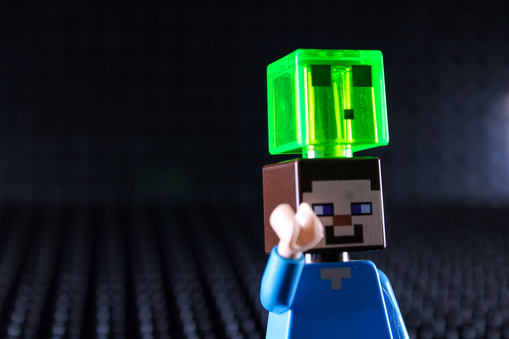

My First Survival World
,October 7 2026 by Akeilia Thompson

When I first started a survival world in Minecraft, I had no idea what I was doing. I punched trees for wood, built a tiny dirt hut, and hid inside as the first night fell. The sounds of zombies outside the door were both terrifying and thrilling, and I knew right away that I was hooked on the game.
Over the next few days I learned how to craft tools, mine for coal and iron, and build a proper shelter. Little by little the dirt hut became a cosy wooden house with a farm, a mine entrance and a small storage room. Every upgrade taught me something new about planning, patience and creativity, which are skills I also use when I write code.
Building With Redstone
October 5, 2026 by Akeilia Thompson

Redstone is often called the electricity of Minecraft, and it is one of my favourite parts of the game. With a few torches, levers and repeaters you can build automatic doors, hidden entrances and even simple calculators. At first the wiring looked confusing, but breaking each machine into small parts made it much easier to understand.
Working with redstone feels a lot like programming. You plan the logic, test your design, find what is broken and fix it until it works. Whenever my door opened on the wrong side or a piston fired at the wrong time, I had to debug the circuit step by step, just like I do with my web pages.